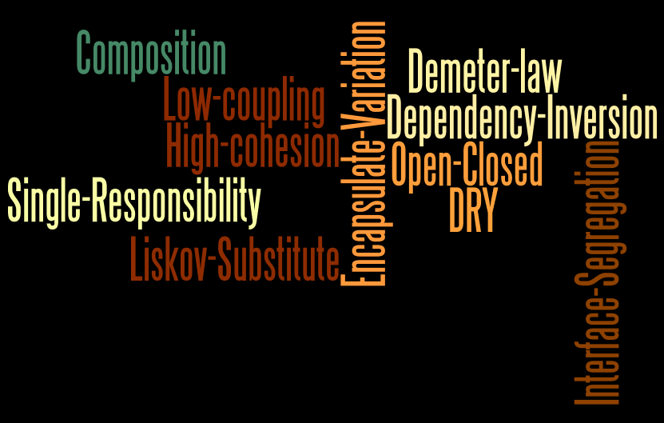
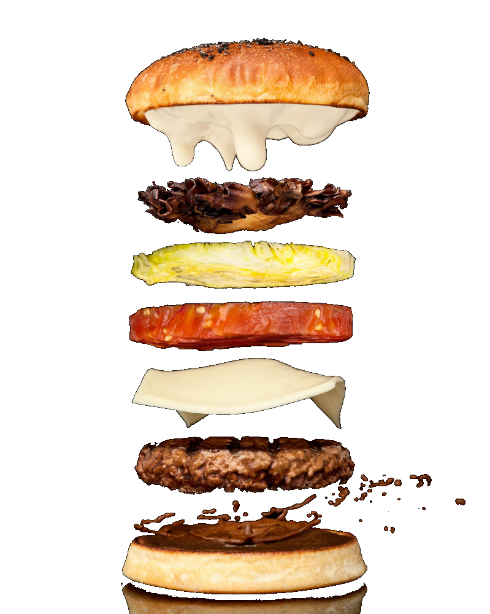
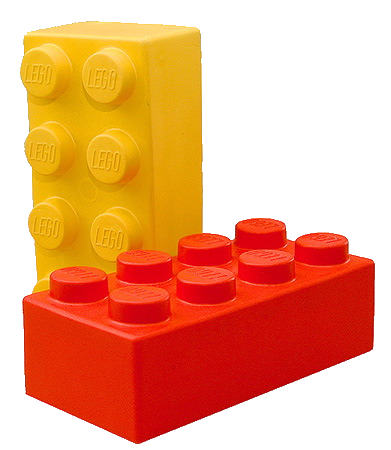
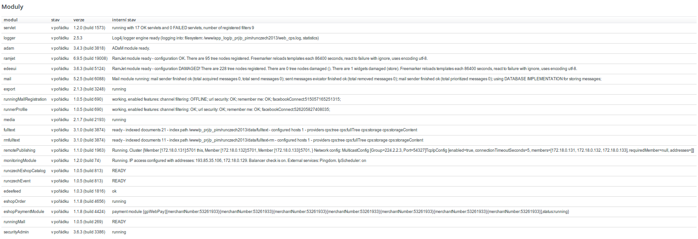

Modularita je dobrá, když ...
- stavíte platformu
- vyvíjíte obří jedno-kontejnerovou aplikaci
- chcete rozbít a postupně povyměňovat legacy kód
- chcete dát příležitost dodavatelům 3tích stran
- stavíte jednoúčelové aplikace
- máte komponentovou architekturu vyššího řádu (SOA, ESB)
- nemáte ambice tvořit znovupoužitelné portofolio kódu (NIH haters)
Začít se dá s málem
- stavěli jsme na tom, co známe
- neměli jsme žádné velké ambice
- byli jsme si vědomi limitů
customizace Spring Frameworku
- existují industriální standardy s letitou historií
- řeší miliony věcí
- jen jsou trochu komplikované
OSGI
Celé je to jen o ...
aplikaci pravidel objektového návrhu na vyšší úrovni.

Nejdůležitější je
- kvalitní izolace
- tak aby nešla jednoduše obejít
- když to obejít půjde, tak to někdo udělá
- standardizovaný způsob komunikace, a.k.a. publikace veřejného rozhraní
- předávání zpráv (observer pattern)
- přímá volání přes veřejná rozhraní
- exlicitní deklarace konzumovaných rozhraní
- určení odpovědnosti/velikosti modulů
- jasně definovaný účel
- malé moduly jdou proti low coupling
- velké moduly jdou proti single reponsibility principle
... a možnost změny za běhu aplikace se šikne!

Zapouzdřit modul ve všech ohledech
... je pěkný oříšek a zamotá vám hlavu, stejně jako nám.
- evoluce datového modelu - verzování (ala Liquibase)
- rozšiřování datového modelu bez obavy z narušení stávající logiky
- zapouzdření view do modulu (FreeMarker, JSP)
- dynamická registrace servletů a filtrů (Servlet 3.0)
- web frameworky s modularizací nepočítají
Ultimátní meta: mít možnost nastartovat stejný modul vícekrát.
Náš přístup k rozšiřitelnosti
stojí na několika základních kamenech
- možnost konfigurovat aplikaci za běhu
- bez změny WARu, dokážeme kompletně překopat obsah a do značné míry i funkcionalitu webu
- dynamické skládání stromu Spring kontextů
- změny probíhají za plného provozu aplikace - původní kontexty řeší požadavky, zatímco nové startují
- skriptování v Groovy
- otevírá cestu k continuous delivery (byť jsme zatím daleko)
- bez testů je však skriptování a modifikace RIZIKOVÉ
- vlastní ORM framework (WTF!)
- Spring JDBC template + Cglib proxies
- bezpečné rozšiřování datového modelu za běhu
- ukládání a dotazování dat v nových sloupcích a tabulkách
- vlastní komponentový framework (WTF!)
- vlastní servlety + Freemarker
- modifikace struktury stránek (i AOP like)
- přidávání a odebírání stránek za běhu
- lokalizace a změny HTML šablon za běhu

Seznam použitých modulů na Runczech.com

Kdo napočítal 21 má u mě pivo!
Startup time 70s
Stojí to za tu námahu
- rozbití monolitu a snížení provázanosti
- zpřístupnění programování základního produktu firmy více vývojářům
- lepší (vertikální) dělba práce
- princip přirozeného výběru
- variabilita díky kompozici
- možnosti zásahů do aplikace za běhu
Aktuálně máme v repository 35+ znovupoužitelných modulů a nepočitatelně jednoúčelových zákaznických modulů.
S moduly se žije těžko
bez nich ještě hůř
Děkuji za pozornost
Honza Novotný, FG Forrest